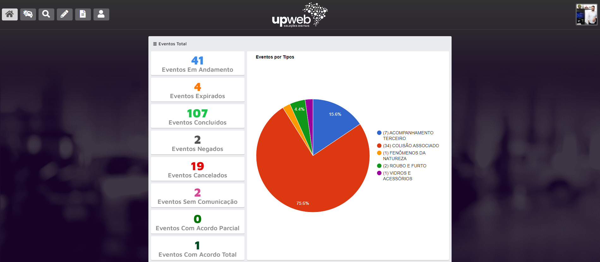
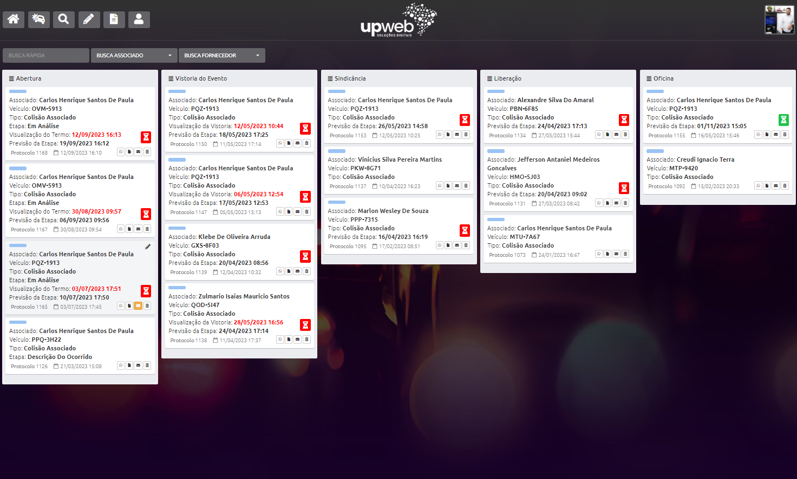
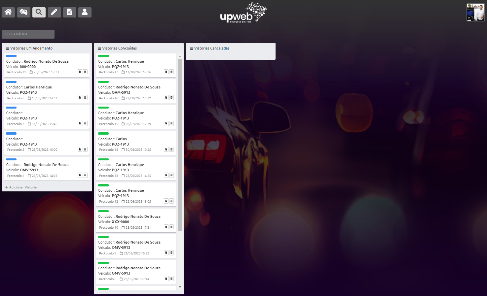

Kanban de Sinistros
Visão clara do fluxo e do status de cada sinistro.

Do primeiro registro ao desfecho final.
Mais controle, menos retrabalho e decisões seguras.
Centralize documentos, vistorias, prazos, aprovações, pagamentos e histórico em uma operação 100% digital, rastreável e segura.
Dados protegidos com criptografia, trilha de auditoria e aderência à LGPD.
Infraestrutura robusta, disponível 24/7 com 99,9% de uptime.
Cada etapa registrada com transparência.
Todos os documentos centralizados e seguros.
Indicadores atualizados para decisões mais rápidas.
Dados protegidos com criptografia, trilha de auditoria e LGPD.
Associações que confiam na UpWeb
Produto
Controle abertura, triagem, documentos, vistoria, análise, jurídico, pagamentos e relatórios em uma operação digital, rastreável e organizada.
Sinistro é onde a promessa da associação encontra a realidade da operação.
Processo, organização e dados transformam esforço em resultado e confiança em reputação.
Visão clara do fluxo e do status de cada sinistro.

Todas as informações, documentos e ocorrências em um só lugar.
Histórico completo de cada movimentação.

Fluxo completo do sinistro
Envio de fotos, vídeos e documentos direto pelo celular, com segurança, histórico e rastreabilidade.
Saiba mais →
Integração com o jurídico, emissão de pagamentos e acompanhamento de aprovações com rastreabilidade total.
Saiba mais →Todos os benefícios que sua associação precisa em um só lugar.
Leitura financeira
Veja custos previstos, aprovados, pagos, prazos, pendências e SLA em uma visão clara para a gestão.
Filtros por período, categoria, oficina, responsável e status.
Ver relatório completo →Regulação e Governança
A UpWeb ajuda sua associação a manter histórico, documentos, prazos e decisões organizados em um ambiente único, reduzindo falhas operacionais e aumentando a rastreabilidade do processo.
O sistema não substitui obrigações legais, contábeis ou regulatórias perante órgãos competentes.
Método UpWeb
Entendemos seu fluxo atual e identificamos oportunidades.
Estruturamos processos, documentos, responsáveis e etapas.
Configuramos o sistema e treinamos sua equipe.
Monitoramos indicadores e apoiamos a evolução operacional.
Ajustamos o processo conforme a maturidade da associação.
Comparativo
Mais controle, menos retrabalho, melhores decisões e mais segurança para a associação.
Agendar demonstração →Demonstração
Entenda como a UpWeb pode transformar a gestão de sinistros da sua associação.
FAQ
Ele reduz a dependência do WhatsApp como ferramenta principal de gestão. O WhatsApp pode continuar como canal de comunicação, mas o controle, o histórico e os documentos ficam centralizados no sistema.
A implantação é conduzida com orientação, configuração inicial e treinamento da equipe.
O sistema organiza acessos, documentos e histórico em ambiente controlado, reduzindo a dispersão de informações.
Sim. A solução pode ser ajustada conforme volume de sinistros, equipe e maturidade operacional.
O sistema apoia organização, rastreabilidade e gestão documental, mas não substitui obrigações legais, regulatórias, contábeis ou jurídicas.
Mais controle, menos retrabalho, rastreabilidade e decisões com segurança.